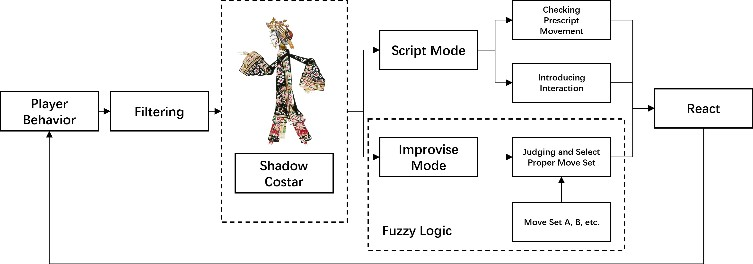

ShadowCostar-Legacy: A Rule-Driven UX Guidance System with Action Detection
一个基于动作检测规则的简易用户体验引导人工智能模型-已过期
First release at Github and HAI' 23

A small scale test for implementing script-based agent to assist players in ShadowPlayVR-Legacy.
一个小规模的测试，用于实现基于脚本的Agent来辅助ShadowPlayVR-Legacy中的玩家。
Last Available in 7.13.2024 最后更新于2024年7月13日ShadowCostar? What for?
ShadowCostar是什么？有什么用途？
ShadowCostar (SC) is an agent designed to control shadow puppetry. While it takes on the role of a puppeteer, it more closely resembles an animated character that collaborates with the player for a performance. Instead of communicating through language, SC uses bodily gestures to simply communicate with players. During performances, SC harmonizes with the player's movements, reacting appropriately. Depending on the player's actions in relation to the script, SC will respond accordingly. When the player struggles or pauses, SC encourages a continuation of the performance or guides them toward suitable interactions.
ShadowCostar (SC)是一个设计用于控制皮影戏的智能Agent。虽然它扮演着操偶师的角色，但它更像是一个与玩家合作表演的角色。SC不通过语言交流，而是使用身体姿势与玩家进行简单的沟通。在表演过程中，SC与玩家的动作协调一致，做出适当的反应。根据玩家与剧本相关的动作，SC会做出相应的回应。当玩家遇到困难或停顿时，SC会鼓励继续表演或引导他们进行适当的互动。
In previous iterations, the development of ShadowPlayVR was more focused on a single-person experience, focusing on reproducing the control methods of shadow puppetry performance techniques, which lays the foundation for this research.
在之前的版本中，ShadowPlayVR的开发更注重单人体验，专注于复制皮影戏表演技术的控制方法，这为本研究奠定了基础。
Historically, an actual puppetry performing experience usually involves two or more characters to be a complete story. In order to expand its functionality and playability, we seize to introduce multiplayer mode to build complete shadow play performance experiences. During the exploration of collaborative performing experience, we found that every nuance in puppet movement, emotion, and character is directly attributed to the puppeteer's skill, while ShadowPlayVR targets students and Chinese culture hobbyists, the skill is not always promising, leading to dissatisfied result, thus we turn our head to introduce agent as a virtual guidance and co-performer, we name the agent "Shadow Costar".
从历史上看，真正的皮影戏表演体验通常需要两个或更多角色才能构成完整的故事。为了扩展其功能性和可玩性，我们引入多人模式来构建完整的皮影戏表演体验。在探索协作表演体验的过程中，我们发现木偶动作、情感和角色的每一个细微差别都直接归因于操偶师的技巧，而ShadowPlayVR的目标用户是学生和中国文化爱好者，他们的技巧并不总是令人满意，导致结果不尽如人意，因此我们转而引入Agent作为虚拟指导和共同表演者，我们将这个Agent命名为"Shadow Costar"。
We have seen the fun that human agent collaboration can bring in the field of performance activities, and borrowed human-agent interaction to enhance ShadowPlayVR's narrative performance ability and depth of expansion.
我们看到了人类与Agent协作在表演活动领域中带来的乐趣，并引入了人-人工智能交互来增强ShadowPlayVR的叙事表演能力和扩展深度。
Towards a Believable Co-Perform Agent
构建一个可信的协同表演Agent

Figure: Demonstration of Shadow Costar Logic.
图：Shadow Costar逻辑演示。
To make SC livelier and more comprehensible, we implemented two logic modes:
为了使SC更加生动和易于理解，我们实现了两种逻辑模式：
- 1. Script Mode: In this setting, SC adheres to a predefined script, responding to the player based on their ongoing actions. When a player's actions sync with the script, SC acts in kind. However, when a notable divergence from the script occurs or a player becomes inactive, SC employs subtle gestures to gently redirect the player, ensuring the continuity of the performance.
- 1. 脚本模式：在这种设置中，SC遵循预定义的脚本，根据玩家正在进行的动作做出响应。当玩家的动作与脚本同步时，SC会做出相应的动作。然而，当出现明显偏离脚本的情况或玩家变得不活跃时，SC会使用微妙的手势轻轻地引导玩家，确保表演的连续性。
- 2. Improvisation Mode: We incorporated fuzzy logic to endow the agent with rudimentary improvisational skills. Recognizing that our target audience may lack uniform expertise in puppetry, script interpretation, or human-agent collaboration the experiences are often inexact and can vary. Fuzzy logic equips SC with the flexibility to exhibit a spectrum of responses in diverse situations, transcending mere binary reactions. For example, if a player introduces an unexpected dramatic element, SC might react with surprise or bewilderment. Or in the case when the player does some movement that is similar to the prescript behavior mode, SC responds to the player with similar and derived actions.
- 2. 即兴模式：我们引入了模糊逻辑，赋予Agent基本的即兴创作技能。认识到我们的目标受众可能在木偶操作、脚本解释或人机协作方面缺乏统一的专业知识，这些体验往往不精确且多变。模糊逻辑使SC具有灵活性，能够在不同情况下展示一系列反应，超越简单的二元反应。例如，如果玩家引入了意想不到的戏剧元素，SC可能会表现出惊讶或困惑。或者当玩家做出一些与预设行为模式相似的动作时，SC会以类似和衍生的动作回应玩家。
Post-Design Reflection:
后日设计谈：
- Many previous agent-assisted performance designs focused on creating a mirror that provides feedback and guidance for practicing performers to examine their movements. This human-agent interaction method aligns well with real-world training approaches for dancers and actors—checking movements in a mirror for correctness, getting immediate self-feedback, or imitating movements from video recordings. In this design, I wanted more than just a mirror; I aimed to create a training partner. In my observations, I found that real-time coaching is more effective for performers, as they often cannot quickly detect incorrect movements or deviations from proper improvement directions. AI error correction? It doesn't sound particularly innovative... and I didn't want to design strict or rigid motion detection rules, because in previous human-computer interaction experiments, people's trust in Agent-provided opinions remains relatively low, and such strictness is not conducive to correcting errors. So I thought of socializing this human-agent interaction, using reactions instead of guidance, simulating how actors in improvisation quickly respond to each other's movements and expressions.
- 过往人工智能辅助表演的设计很多停留在为练习的表演者设计一块会给出意见和指导的镜子来审视自己的动作。这种人-智能交互方式非常符合现实当中如舞蹈、戏剧演员的训练方式——对着镜子检查自己的动作是否规范，站在自己的角度及时反馈，或者是对着录像带模仿动作。在这个设计当中我想要的不只是一块镜子，我想做的是一个类似陪练的角色，在的观察当中，我发现教练即时指导的方式对于表演者来说更高效，因为表演者往往不能够迅速察觉出错误动作和正确改进方向上的偏离。人工智能纠错？听起来不是非常新颖...而且我也不想设计一个严苛的或者死板的动作检测规则，因为在过往的人机交互实验当中，人们对于人工智能给出的意见的取信度依然偏低，这种严苛死板也不利于纠正错误。于是我就想到将这个人-智能交互社会化，用反应替代指导，模拟即兴表演舞台上演员之间快速根据对方动作表情做出自身表演效果的判断。
- This led to the idea of designing the agent as another performer, which became ShadowCostar. To quickly implement this functionality, I used the behavior tree method because of its relatively simple implementation in Unity. Based on the system's original control system, I only needed to perform range detection on the input data to determine the player's actions, allowing me to focus on designing feedback effects.
- 由此就想到了将这个人工智能设计成另一个表演者的想法，于是就有了ShadowCostar。当时为了快速实现这种功能，我使用的是行为树（behavior tree）方法，因为其在unity中的实现较为简单。基于系统原本的控制系统，我现在只需要将输入的数据做一个范围检测，就能判断出玩家的动作表现，这样我只需要设计反馈效果就可以了。
- In the earliest versions, SC could respond to several different player actions based on presets, but in actual testing, players constantly demonstrated extraordinary creativity and behaviors beyond the presets, making it difficult for SC to correctly identify and respond to player actions. So I introduced "confusion" as an interaction mode based on human-human social behavior where one person's actions prompt the other to correct their behavior, covering all actions outside the preset range. In this version, players could still quickly grasp SC's feedback method and soon either thought SC was malfunctioning or simply ignored it. So I thought of introducing fuzzy logic to implement diversified feedback for the same input method. After establishing and completing the user experience design for the final version, I discovered that this script-based agent was an iteration hell, so my design stopped here as I turned to seek better implementation methods.
- 在最先几个版本里，SC能够根据预设对玩家的数个不同动作做出反应，但在实际测试当中总是会不断展现出超凡的创造力并出现超乎预设的行为，使得SC无法正确判断出玩家行为并作出判断。于是我引入了"迷惑"这一种人-人社交行为当中基于动作让对方进行行为纠正的互动模式（通过隐喻的姿势表达），来覆盖所有非预设范围内的动作。这个版本里，玩家还是能够迅速把握到SC的反馈方式，并且很快就认为SC出故障或者干脆忽略他。于是我想到引入模糊逻辑来实现同一输入方式的多样化反馈。在最终版本确立并完成用户体验设计后，我发现了这种脚本式人工智能就是一个迭代地狱，于是乎我的设计就停在了这里，转而寻找更好的实现方式
- This article was written just before the popularity of large language models like ChatGPT, which have natural advantages in processing unstructured data and can implement more complex interaction methods. Perhaps in the future, I will design a new version of SC based on these technologies.
- 这篇文章也恰好写在ChatGPT等大语言模型流行前，其在处理非结构化数据方面有着天然的优势，而且可以实现更加复杂的交互方式。或许我未来会基于其设计一个新版本的SC。
Ref.
- Wenli Jiang, & Chong Cao. 2021. Reconstruction: A Motion Driven Interactive Artwork Inspired by Chinese Shadow Puppet. In Proceedings of the 29th ACM International Conference on Multimedia (pp. 1441-1442).
- Culture Sector – UNESCO. 2011. Chinese shadow puppetry – intangible heritage. https://ich.unesco.org/en/RL/chinese-shadow-puppetry-00421
- Abhijeet Agnihotri, Amy Chan, Samarendra Hedaoo, & Heather Knight. 2020. Distinguishing robot personality from motion. In Companion of the 2020 ACM/IEEE International Conference on Human-Robot Interaction (pp. 87-89).
- Patrick Tobias Fischer, Franziska Gerlach, Jenny Gonzalez Acuna, Daniel Pollack, Ingo Schäfer, Josephine Trautmann, & Eva Hornecker. 2014. Movable, kick-/flickable light fragments eliciting ad-hoc interaction in public space. In Proceedings of the international symposium on pervasive displays (pp. 50-55).
- Dongcai, Zhang. 2020. Shadow puppet performance in China (in Chinese). Daxiang Express.
- Assem Kroma and Ali Mazalek. 2021. Interfacing & Embodiment: ”Baby Tango” Dancing Robot Attempts to Communicate. In Proceedings of the 13th Conference on Creativity and Cognition (C&C '21). Association for Computing Machinery, New York, NY, USA, Article 49, 1–5. https://doi.org/10.1145/3450741.3466633
- Ernest Edmonds. 2010: The art of interaction, Digital Creativity, 21:4, 257-264
- Peter H. Kahn, Takayuki Kanda, Hiroshi Ishiguro, Brian T. Gill, Solace Shen, Jolina H. Ruckert, and Heather E. Gary. 2016. Human Creativity Can be Facilitated Through Interacting With a Social Robot. In The Eleventh ACM/IEEE International Conference on Human Robot Interaction (HRI '16). IEEE Press, 173–180.
- Wen-Ying Lee and Malte Jung. 2020. Ludic-HRI: Designing Playful Experiences with Robots. In Companion of the 2020 ACM/IEEE International Conference on Human-Robot Interaction (HRI '20). Association for Computing Machinery, New York, NY, USA, 582–584. https://doi.org/10.1145/3371382.3377429